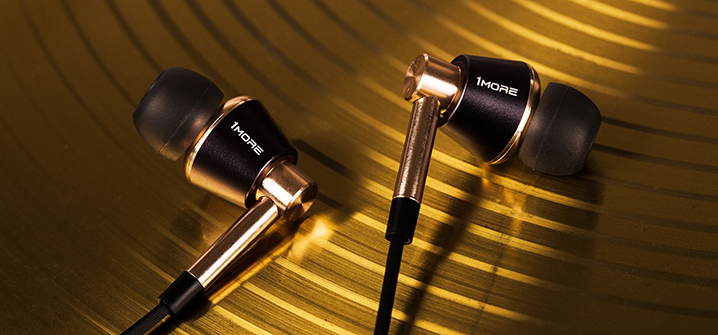

了解苹果官方MFi认证
很多人都知道，当把苹果充电线插入iPhone后不跳出任何提示，能够正常播放歌曲，正常传输数据，同步资料等，它就是MFi认证产品。而非认证的苹果配件连接后会弹出警告提示，甚至还会直接转换成飞行模式，表明非认证配件不能跟苹果产品结合，更会影响苹果产品正常使用。
MFi是什么？
苹果MFi认证是苹果公司（Apple Inc.）对其授权配件厂商生产的外置配件的一种标识使用许可，是Apple公司 “Made for iOS”的英文缩写。 市面上MFi认证产品的显著标识，就是在包装正面出现如下白底黑字的苹果MFi授权logo，这个logo标志必须同时出现iPod、iPhone、iPad这三样东西，否则就是假假假假假的！
由于苹果公司允许授权厂商自己在产品包装上印授权标签，想要进一步“验明正身”，可登录苹果官方网站，通过产品型号、品牌和UPC/EAN商品编码进行搜索查询。
MFi认证非做不可吗？
MFi体系审核，苹果将考察申请的公司对MFi芯片的管理体系，看公司是否有规范的流程和系统来管理MFi芯片，能有效防止转售芯片或挪用芯片（把芯片用到未通过MFi认知的项目上），苹果会安排专人或代理公司来抽查。
作为世界知名的高科技公司，为维护产品生命周期，保证品牌形象，苹果要求对授权的配件确保其品质和品位与自己一致，并且该授权产品必须通过多重严格测试，才可获得认证许可，从产品的设计、质量、兼容性这几个维度来说，MFi认证的配件比没认证的配件在质量上可为消费者提供更可信的保障。能够申请并成功获得MFi授权，也成为苹果配件生产和设计企业在其技术与质量实力的一种标志。
苹果对所有授权经销商有明确且强制性的要求，对于苹果的功能性配件产品，必须销售获得认证且授权品牌的配件产品。非授权的配件（尤其那些9块9包邮的山寨品）将苹果产品造成损坏，比如：无法正常充电、电池寿命受损，甚至爆炸等，造成不可挽回的损失。
MFi体系审核，苹果将考察申请的公司对MFi芯片的管理体系，看公司是否有规范的流程和系统来管理MFi芯片，能有效防止转售芯片或挪用芯片（把芯片用到未通过MFi认知的项目上），苹果会安排专人或代理公司来抽查。
过了MFi体系审核，就迎来第二关：MFi会员资质审核。苹果将对公司的其他情况进行考察，如：是否具有较大的生产规模；是否拥有自主品牌；品牌在业内是否有较高的地位（主要表现为各类荣誉）；是否曾为其他国际知名企业供货；研发人员是否达到苹果要求的人数等。申请者要确保申报资料的真实性，苹果公司将逐一核实。有传闻说大部分企业都会被卡在会员资格审核这一步。
通过MFi认证后的厂商也必须遵守苹果MFi的准则进行设计和生产，任何设计、物料上的变更都需要告知苹果方，且若不能保持品质和资质，将被取消认证资格。每款MFi认证的产品在下市后，其MFi认证也将失效，新产品需重新申请。
苹果MFi认证是苹果公司（Apple Inc.）对其授权配件厂商生产的外置配件的一种标识使用许可，是Apple公司 “Made for iOS”的英文缩写。 市面上MFi认证产品的显著标识，就是在包装正面出现如下白底黑字的苹果MFi授权logo，这个logo标志必须同时出现iPod、iPhone、iPad这三样东西，否则就是假假假假假的！
由于苹果公司允许授权厂商自己在产品包装上印授权标签，想要进一步“验明正身”，可登录苹果官方网站，通过产品型号、品牌和UPC/EAN商品编码进行搜索查询。